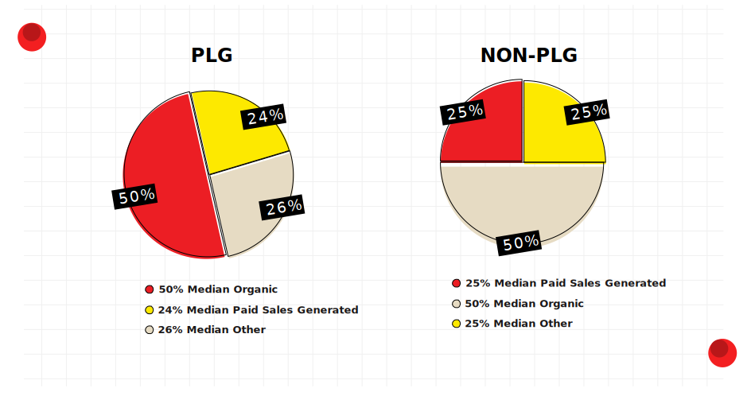
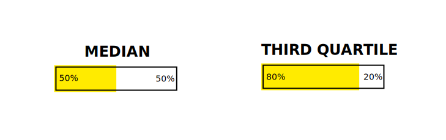
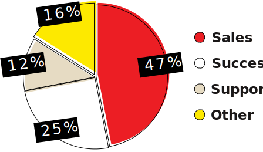
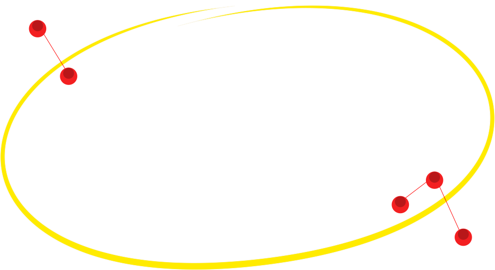

Ditching Marketing is a bad idea
When the product itself becomes an acquisition machine, marketing is still desperately needed, just at different parts of the customer journey.
Think of traditional SaaS models as front-loading commercial activities, and product-led teams as placing those resources during strategic discovery moments as users unlock value in the product itself.
User acquisition comes from very different places for product-led companies.

As organic traffic becomes front-and center, marketing is tasked with finding scalable ways to build brand awareness. Snyk, for example, does this with programmatic SEO. As PLG becomes more mature I expect we’ll see marketing flexing their creative muscles to competitively capture our attention.

The KeyTakeway
Just like PLG-focused teams are changing, we’re going to also see marketing flexing new muscles
Sam’s dev playbook
Conversion is now a Team Sport
Say it with me: Product-led doesn’t mean no-sales.
Self-service conversion is the dream right? Build a great product, and people will discover it organically, fall in love with it, and buy it. Well, for most, self-service conversion is in hatchthe minority. About half of all conversions were self-serve, according to respondents.

Product-led means you can expect sales to engage with users further down the funnel, after they’ve gotten the opportunity to try the product and have questions about their specific use-case.
Sales is most likely performing the initial outreach to engage with free users
Feel overwhelming for the team? Download our full report to better understand the tools that Growth pros use to automate this outreach and qualify free users.


The KeyTakeway
Product-led doesn’t mean no sales—most companies still have sales reach out to free users.
Click here to read more